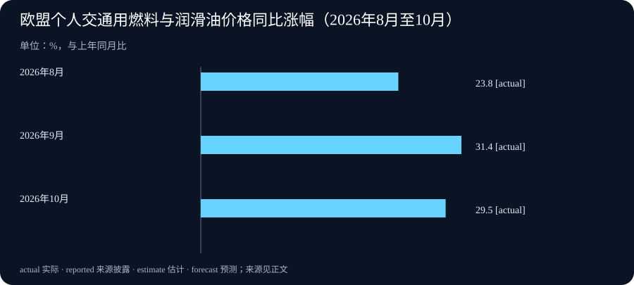

Daily Intelligence｜2026-11-24
- 新闻研究截止：2026-11-24 07:00:16（Asia/Shanghai）；固定窗口为2026-11-23 07:00:16至2026-11-24 07:00:16。OpenAI的来源页只标11月23日，没有披露具体小时，不能据此证明发布时刻严格落在窗口内。Google页面的发布时间是协调世界时11月23日17:00，换算为上海时间11月24日01:00，在窗口内。Eurostat明确在协调世界时11月23日10:00发布，换算为上海时间18:00；英国国家统计局明确在11月23日09:30（格林尼治时间）发布，换算为上海时间17:30。
- 本期新增：OpenAI开源了保护运行中Linux系统的防护运行时Shirudo；Google把钱包账户接入搜索AI模式的个性化回答；欧盟公布2026年10月燃料价格涨幅；英国国家统计局说明劳动力调查换轨进度。本期没有新的模型评测成绩。对照了11月23日与22日两期全文，未把已报道的模型困惑度论述、学术会议闭幕、印度公共拨款、Bedrock多语种检索、AWS Quick网页体验、印度—加拿大谈判或Shalimar Paints合并重复作为新事件。
Today's Thesis
今天两条AI消息改变的是"出错时怎么撑住"和"回答从哪里取资料"，都没有宣布模型本身更强。OpenAI的Shirudo把补丁等待期变成可管理的风险：系统继续运行，防护规则在有漏洞的入口处挡住恶意输入。它降低的是被利用的可能，不保证挡住所有攻击，也不替代打补丁。Google让搜索读取你授权的账户资料，回答更贴近你的情况；官方同时写明AI模式只能读取，不能移动、管理或投资资金。
另外两条来自官方统计，重点在数字的时间属性。欧盟10月燃料价格比上年同月上涨29.5%，环比小幅回落，说明同比仍在高位而当月涨幅收窄。英国国家统计局公布的是调查换轨进度：新调查回应率高于旧调查，但成为发布头条数据的来源要等到2027年11月。四件事共用同一个检验方法：这是已经发生的结果，还是正在推进的过程？
Executive Summary
OpenAI在11月23日介绍名为Shirudo的开源运行时，针对的情形是漏洞已经公开、补丁却还没铺完，而重启会影响在线业务。它用eBPF（一种在内核里运行受检小程序的机制）在操作系统检查点挂上"防护"，让已确认的恶意输入进不到有漏洞的代码路径。页面描述了一项在运行中的Elasticsearch上完成的受控测试：防护在Java的Base64解码入口增加输入检查，恶意输入被拒绝，服务没有重启。官方列出的四项能力是不重启的实时保护、快速下发的防御、经加密签名与内核验证器把关的可信部署，以及用可信平台模块记录防护装载与卸载的硬件支撑核验。
Google在11月23日说，用户可以选择把Google钱包接入搜索AI模式中的个性化能力。接入后，AI模式可以引用钱包里的资料，用来解释财务阶段目标、找出可削减的开支、比较返现与旅行权益的用法。Google写明限制：AI模式只能读取账户信息，不能移动、管理或投资资金。云端硬盘与Gemini应用的接入被列为"未来几周"的后续步骤，目前尚未上线；此前已支持Gmail、日历和照片。
Eurostat在11月23日公布2026年10月的燃料价格统计。按调和消费者价格指数口径，欧盟个人交通用燃料与润滑油价格比上年同月上涨29.5%，此前8月涨23.8%、9月涨31.4%。3个成员国涨幅超过40%，最高是爱沙尼亚的44.1%；最低是匈牙利的11.3%。环比看，10月柴油比9月低0.2%，汽油低3.0%，而9月环比曾分别上涨5.9%和6.7%。这些是价格指数的变化率，不是加油站标价，也不是家庭实际支出。
英国国家统计局在同日发布劳动力调查换轨的进度说明。新设计的劳动力调查核心第一波在2026年7至9月的回应率为40.5%，追踪样本第二至五波为37.7%；作为对照，旧调查第一波为33.6%。样本规模从24,092个地址扩大到89,973个，填写激励从10英镑提高到20英镑。文件同时给出时间表：2027年1月检查进度，2027年第一季度提出转换方案并作出就绪决定，2027年11月让新调查成为头条数据来源。
AI Daily
Shirudo想在补丁铺开之前先挡住利用
OpenAI在11月23日发布Shirudo，说明它是一套开源运行时，用来保护正在运行的Linux系统，为补丁开发与部署争取时间。Linux是许多服务器和企业环境的操作系统；重启与停机会影响在线服务，因此从漏洞公开到全部完成升级往往需要数周。
它的做法是在操作系统的检查点挂上称为"防护"的小程序。这类程序通过eBPF在内核中运行，装载前要通过Linux的eBPF验证器做安全性检查。防护的目标不是判断系统是否已被入侵，而是让已知的恶意输入到不了有漏洞的代码路径。OpenAI列出的四项能力是：实时保护，不重启即可挡住有漏洞的路径；以机器的速度防御，新防护可以快速下发并由安全团队控制装载内容；可信部署，防护经加密签名，装载前经验证，并受内核安全控制约束；硬件支撑的核验，使用可信平台模块留下防护被装载或移除的可核对记录。
页面描述了一项与Isovalent合作的受控测试：针对Java4Shell这类利用方式，防护在连接到运行中Elasticsearch进程的Java Base64解码入口增加输入检查，恶意输入被拒绝，攻击被挡住，而Elasticsearch继续运行。代码以BSD 2-Clause授权发布，其中的eBPF程序按BSD/GPL双许可提供，技术细节在Linux Plumbers Conference做过讲解。OpenAI的Greg Brockman在页面中的说法是，今天发现一个漏洞，并不意味着明天就能把所有系统补完。
需要区分的边界是：这是工具与安全能力变化，不是新模型成绩。内容全部来自OpenAI自己的页面，测试在合作方环境中完成，没有公布独立第三方评估、拦截率、误报率，也没有说明对系统性能的影响幅度。防护能否起作用，仍取决于它覆盖哪些代码路径、谁有权限装载、以及原有补丁流程是否继续推进。
来源：OpenAI：介绍Shirudo（11月23日；小时未披露）
Google搜索开始读取用户授权的钱包资料
Google在11月23日发布更新，让用户选择是否把Google钱包接入搜索AI模式中的个性化能力。这项能力按用户授权的范围从个人账户取资料来回答问题，页面没有把它描述成新的模型或新的搜索排序规则。
接入钱包后，官方举的例子是理解自己的财务阶段目标、找出可以削减的开销，以及说明返现、旅行权益和积分怎么用更划算。Google同时写明限制：AI模式只能读取账户信息，不能移动、管理或投资资金。这个区分很关键，因为"能读到"和"能操作"是两种不同的权限。
上线是分步进行的。钱包接入从发布当天开始铺开，云端硬盘与Gemini应用被列为"未来几周"的后续步骤，目前还不可用；此前已支持Gmail、日历和照片。用户可以在搜索个性化设置中的"已连接应用"里选择接入或断开，也可以整体关闭个性化。Google还计划在个性化回答下方显示一个个性化标识，并允许用户通过回复修改所使用的背景信息。
对个人与企业用户，值得关注的是范围与预期。个性化越依赖个人账户，越需要核对回答引用的是哪份资料、日期是否过期、权限是否只到读取。Google没有公布答案准确率的独立测量，也没有说明哪些国家或账户类型可用。用钱包资料讨论财务安排时，仍要本人核对具体条目与适用条件。
来源：Google：让搜索结果更贴合你的实际情况（协调世界时11月23日17:00）
Business Daily
欧盟燃料价格同比仍在高位，10月环比小幅回落
Eurostat在11月23日公布2026年10月的燃料价格。按调和消费者价格指数口径，欧盟个人交通用燃料与润滑油价格比上年同月上涨29.5%。此前8月同比上涨23.8%，9月上涨31.4%。10月的同比涨幅高于当年8月和9月的情况，出现在19个成员国。
成员国之间差别很大。3个国家涨幅超过40%：爱沙尼亚44.1%、保加利亚42.8%、立陶宛42.3%。另有11个国家涨幅在30%以上，从卢森堡和芬兰的36.6%到克罗地亚的31.0%。最低的是匈牙利，涨11.3%，其后是爱尔兰21.5%和波兰21.9%。
环比看，10月欧盟柴油价格比9月低0.2%，汽油低3.0%；9月的环比涨幅则分别为5.9%和6.7%。也就是说，当月价格略低于9月，但仍远高于上年同期。国别差别更大：柴油环比涨幅最大的是爱尔兰6.1%，降幅最大的是波兰9.0%；汽油降幅最大的同样是波兰，为12.0%。马耳他的燃料价格自2020年起固定，因此没有变化。
口径要讲清楚：这是价格指数的同比与环比变化率，不是每升多少钱，也不是家庭的实际支出金额。数据由成员国按统一规则采集并上报，统计期是2026年10月，发布日期是11月23日，两者相差约三周。做成本判断时还要注意，运输用燃料与供暖、工业燃料属于不同类别，不能混用同一个涨幅。
来源：Eurostat：2026年10月燃料价格变化（协调世界时11月23日10:00）
Macro Observation
英国调查换轨：回应率上升，头条数据还要等
英国国家统计局在11月23日发布劳动力市场转型的进度说明，核心是把沿用多年的劳动力量调查替换为新设计的劳动力调查。这次公布的是调查质量与设计变化的证据，不是新的就业人数或工资数据。
回应率是最直接的对比。新调查核心第一波在2026年7至9月的回应率为40.5%，4至6月为39.9%，1至3月为37.1%。追踪样本的第二至五波在7至9月为37.7%，高于1至3月的27.7%和4至6月的32.8%。作为对照，旧调查第一波回应率为33.6%，新调查高出6.9个百分点。样本规模也从24,092个地址增加到89,973个；作出回答的住户分别为36,433户与8,095户。
改变的不只是抽样。官方把填写激励从10英镑提高到20英镑，并从2026年4月起调整数据轮换安排。在一项跨调查比对中，关于"为何不在找工作"的回答有71.3%保持一致；自报长期患病的人在下一次回答时有72.2%仍选同一选项，13.6%改选"已退休"。行业与职业问答也做了测试：约五分之四的受访者使用了编码查询功能，而在这些使用者中约十分之七选到了五位行业或职业编码，其余人以自由文本作答。
统计局还发布了首批劳动力流动统计，覆盖2014至2026年的入职、离职与跳槽流量，并标注为"开发中的官方统计"，即正式定稿之前供使用和反馈的早期版本。文件承认，2026年5月旧调查的一次操作失误减少了可关联的记录，也降低了净流量的精度。术语上提议改用"劳动力人口"与"非劳动力人口"。时间表达为：2027年1月检查进度，2027年第一季度提出转换方案并就发布准备情况作出决定，2027年11月让新调查成为头条数据来源，之后逐步停用旧调查与年度人口调查。
对读者的意思是：今后一两年内，就业口径的变化可能同时来自劳动力市场本身和调查方式的改变。看到某个群体的比例明显跳升时，先问是不是新调查更容易收到回答、或者问题措辞不同，而不是直接当作经济信号。
来源：英国国家统计局：劳动力市场转型进度与计划（11月23日09:30格林尼治时间）
Signal Dashboard
- 运行中防护：Shirudo用eBPF在不重启的前提下挡住已知漏洞路径，并提供签名装载与硬件记录；没有独立第三方的拦截率、误报率或性能影响数据。
- 个性化边界：Google AI模式当日开始允许接入钱包资料，明确只能读取、不能移动或投资资金；云端硬盘与Gemini接入仍是"未来几周"的计划。
- 燃料价格：欧盟10月同比上涨29.5%，环比柴油−0.2%、汽油−3.0%；同比涨幅高于8月和9月的成员国共19个。
- 统计口径：英国新调查回应率40.5%（7至9月）高于旧调查第一波的33.6%；成为头条数据来源的目标时间是2027年11月。
Deep Insight
中间状态变多了：撑住、读取、换轨，都不等于结果已经落地
今天几件事看起来不相关，其实都落在"目标与结果之间的中间状态"。Shirudo处理漏洞公开后到补丁铺开前的空档。搜索个性化处理"资料可读"与"答案可信"之间的授权环节。英国统计换轨处理旧调查尚未停用、新调查还没成为头条来源的过渡期。
先看安全这一条。传统做法把打补丁当成唯一解法：发现问题、修复、部署。现实中的大型环境做不到当天完成，于是这段等待期只能被动承担风险。Shirudo的思路是给这段时间一个可管理的工具，用规则挡住特定入口。但它带来的问题同样具体：谁有权下发防护？规则覆盖哪条代码路径？性能下降多少？拦截时是否留下可审计的记录？如果一项安全措施只有厂商页面在描述，外部看不到测试条件与失败样本，那么它更应被理解为"降低可能性"的手段，而不是"已经安全"的证明。下一步该看的证据是独立评估，包括绕过尝试、误报造成的业务影响，以及防护规则本身的更新延迟。
搜索个性化提出的是另一类问题：数据可读不等于结论可靠。当AI模式引用你的钱包资料时，它给出的是"根据你的账户"的描述，不是对所有用户都成立的建议。返现规则、权益有效期、税务处理都会变化，资料读取的时点决定回答是否仍然适用。官方写明不能操作资金，是把权限划清；但用户仍需自己确认答案引用了哪一条、哪一天。判断标准可以很朴素：这条个性化回答能否让你直接打开原始条目复核？如果不能，它只是提示，不是决策依据。
统计换轨提醒的是第三件事：数据本身的可比性。新调查回应率更高、样本更大，通常意味着估计更接近总体，也意味着与历史序列之间出现断点。如果新调查在2027年11月成为头条来源，此后某些群体的比例变化会同时包含真实变化与测量变化。统计局把流动统计标为"开发中"、承认5月操作失误影响精度，属于把局限写在前面。使用这些数字的人，应把口径变更当作分析步骤的一部分，而不是文末注释。
把三件事放在一起，能得到一份通用的追问清单：现在处于哪一步，是已上线、需自选接入，还是仅宣布将要推出？数字属于哪个期间，统计期与发布日相差多久？测量由谁完成，是本人、合作方还是独立机构？还差哪些条件才算结果落地？把这四个问题回答清楚，多数公告就能被放回恰当的位置：它们改变的是过程与工具，不是已经实现的事实。
Tomorrow Watch
- 防护是否有外部测试？关注Shirudo是否公布独立评估、覆盖的漏洞类别清单和性能影响数据；厂商与合作方完成的受控测试不能替代第三方复核。
- 接入范围是否真的扩大？留意Google何时确认云端硬盘与Gemini接入实际可用，以及各地区可用性与关闭入口是否一致；"未来几周"目前仍是计划。
- 燃料价格是否延续回落？Eurostat通常按月发布初步数据，下一个统计月为11月；环比方向与同比高位如何组合，比单月涨幅更能说明走势。
- 英国换轨是否按计划推进？下一个节点是2027年1月的进度检查与第一季度的转换方案；在此之前引用英国就业数据，应同时说明新旧调查口径。
One Chart
图表显示欧盟个人交通用燃料与润滑油价格的同比涨幅（调和消费者价格指数口径，与上年同月比），覆盖2026年8月至10月。三个点说明同一件事：价格水平仍远高于上年同期，但10月的月度上涨动能比9月小。同比涨幅不等于价格水平，也不反映国别差异——同期成员国区间从匈牙利的11.3%一直到爱沙尼亚的44.1%。

来源：Eurostat：2026年10月燃料价格变化（协调世界时11月23日10:00）
Quote of the Day
"When a series of changes has run all its course, another change ensues. When it obtains free course, it will continue long."
>
中文原文：「易穷则变，变则通，通则久。」（《周易·系辞下》）
>
白话释义：事情推进到走不通的境地，就要发生变化；变化之后路走通了，才能长久持续。
>
人物与出处：《周易·系辞下》，属于解释《周易》的《易传》部分。《系辞》并非一人一时写成，学界通常认为其内容在战国至汉代逐步汇编成形，把它归于孔子所作的传统说法自古存在争议。此处英文采用理雅各（James Legge）的已刊译文。原文见ctext.org《系辞下》页面。
>
编辑解读：这句话讲的是变化成立的条件：先遇到走不通之处，再作调整，然后才谈得上持续。本期四件事都处在这种中间状态——防护在补丁之前顶上，个性化在权限之内读取，统计在新旧口径之间换轨。判断进展，要看路是否真的走通，而不是只看动作是否已经做出。
Action Items
- 先确认权限，再谈效果。若要在生产环境试用运行中防护，先验证防护的装载审批、卸载记录与性能影响，并保留原有补丁时间表；不要因多了一层防护就推迟打补丁。
- 核对被引用的资料。用个性化搜索回答财务或税务问题时，打开对应账户条目，确认日期、适用范围与例外条件；把"读取"与"操作"分开看，AI模式不能替你处理资金。
- 区分统计期与发布日。引用欧盟燃料价格时注明统计月份为2026年10月、发布日为11月23日，并说明同比与环比的差别；成员国之间差异很大，不要用欧盟均值代替某一国。
- 给数据变化找原因。看到英国就业相关比例变动时，先查是否受调查换轨、激励调整或口径变化影响；官方时间表显示头条数据来源要到2027年11月才切换。